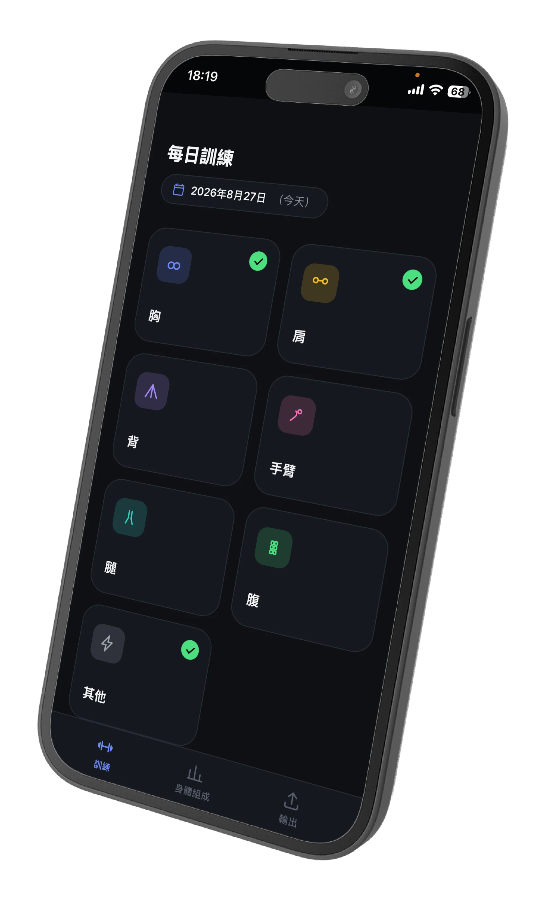
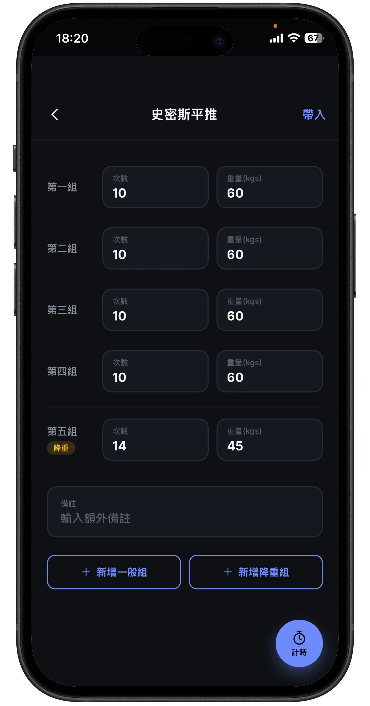
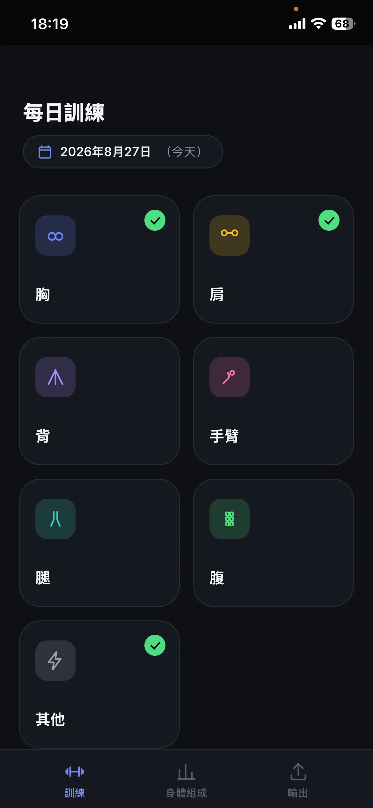
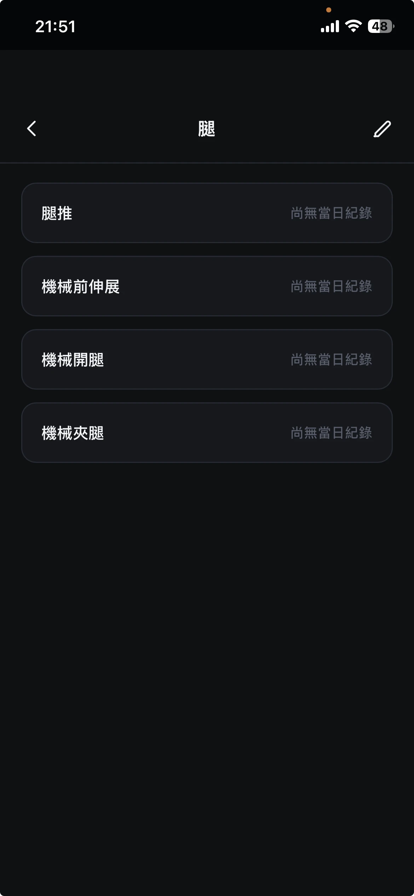
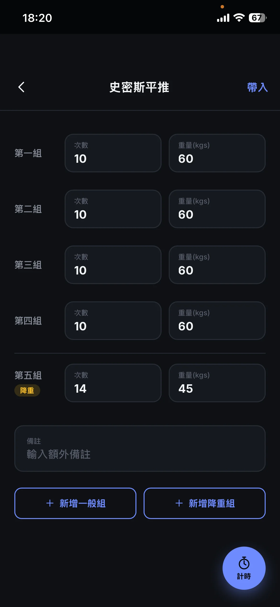
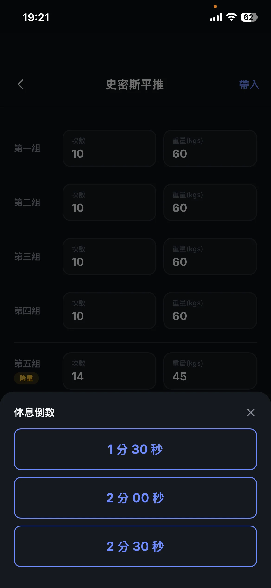
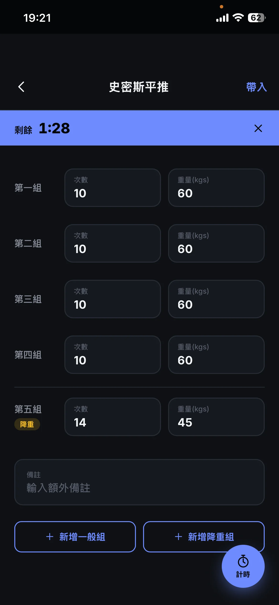
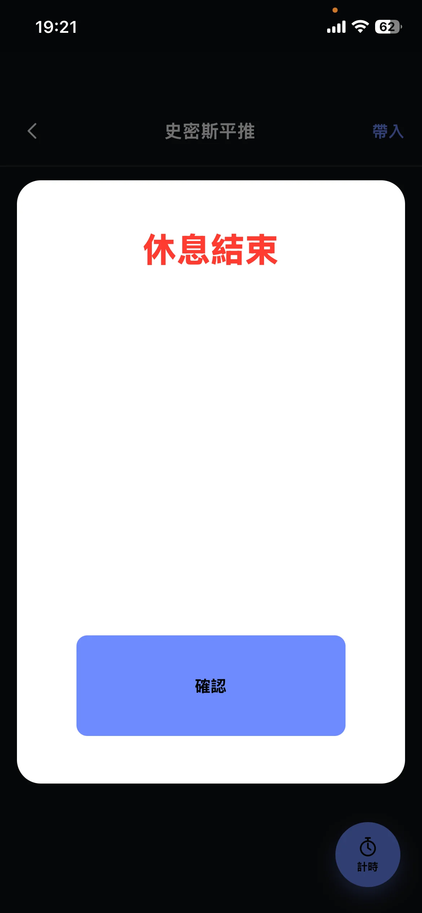
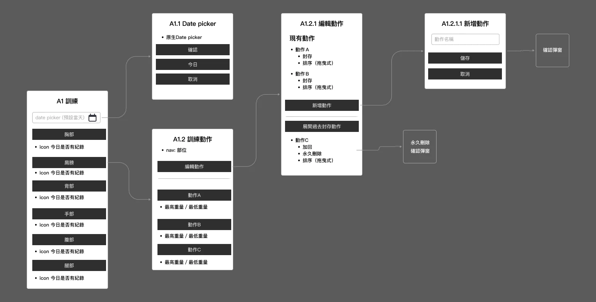
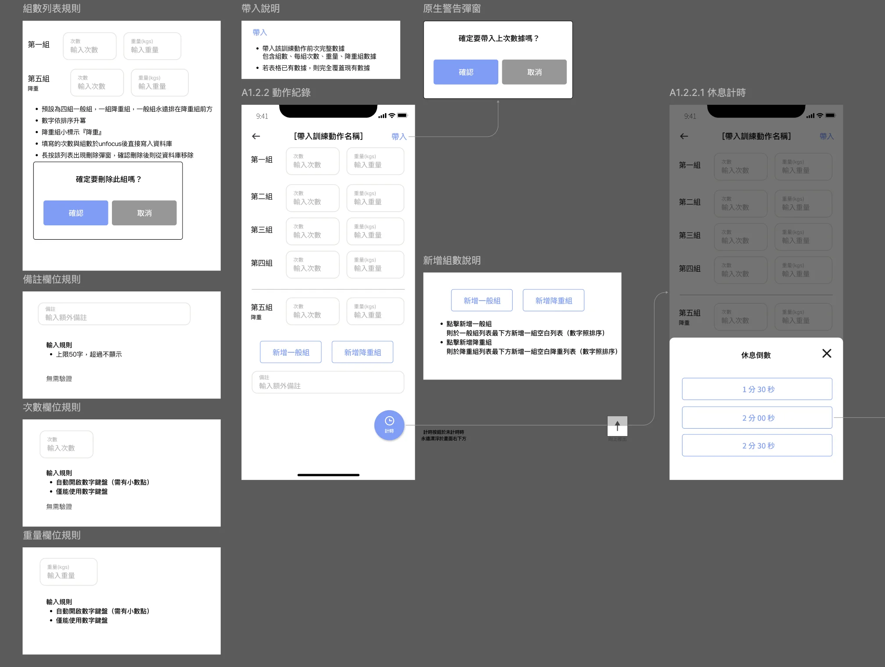

從個人需求出發的自主開發實驗
健身紀錄 Web App
Intro
健身紀錄 Web App
健身紀錄是一款能精細紀錄訓練內容的 Web app，以身體各大部位為根基，可以往下自定義每個動作，分別記錄每次的訓練組數、次數與重量，並額外設計了『帶入』功能，直接帶入上次訓練紀錄，只需依當次訓練內容進行細部修改，即可完成一天的紀錄。
在填寫紀錄同時也提供組間休息計時器的功能，以突兀的大量留白跳窗進行視覺上的提醒，以確保不干擾耳機內的音樂播放。
同時也包含記錄體重/體脂、日曆熱力圖與資料輸出功能，以滿足我個人的完整訓練需求。






Problem & Research
沒有一個看得懂，不如自己做一個
開始認真進行體態管理後，先是請 Claude AI 扮演我的健身教練，在飲食與訓練上給予執行計劃外，為了能讓成果更顯著，且有量化的資料可以讓健身教練 AI 作為後續調整或提供建議的依據，針對重量訓練就想要有更細緻的記錄方式。
但市面上多數的健身app普遍存在幾個問題，因此即使已經存在眾多健身app，我還是決定設計一套專屬於我自己的健身紀錄軟體。
How
對於自己，我的訓練方式與流程是如何？
基本上每週一、四訓練胸部與肩膀；每週二、五訓練背部與手臂；每週六訓練腿部，此外還有常態性的有氧與腹部訓練。
每個動作會有 3~4 組，10~12 下，另外再多加一組『降重組』，藉由較低的負重減少受傷的風險，並且完整達到力竭。
因此隨著每天的狀態不同，或是訓練計劃的調整，我希望能精確的分別計算每組的重量與次數，並將降重組獨立出來紀錄，由此得到最完整的訓練量（Volume）數據。
此外，在每組訓練的中間，希望能有一個倒數工具來避免我休息時間過長或過短，同時不干擾到耳機裡音樂的播放。
設計重點
Start from scratch
工人智慧先行，AI 只是輔助
在功能與流程構思期間，腦中已經有了產品介面與操作動線的雛形，因此直接進入資訊架構設計環節。
一邊想著自己實際的使用情境，一邊跟AI討論哪些欄位能更有助於未來的分析，以此盤點畫面上的每個欄位以及操作方式
資訊架構示意畫面

當所有欄位與重點功能皆思考完整後，為了確保後續AI產出的內容與我腦中所想的產品樣貌能準確對齊，我依然使用Figma進行Wireframe的設計，並將每個欄位、判斷、輸入指令、功能內容以及不同狀態、頁面排版等完整產出，且留下明確的頁面編碼，以利後續與AI溝通。
Wireframe 示意畫面

Vibe coding
人工智慧登場
開發事前規劃、視覺與實際開發
感謝Figma MCP，可以讓 Claude code 直接讀取 Figma 的頁面與內容。
接下來與 AI 討論實際的程式開發環節，例如Native app與Web app的效能差異、伺服器建置、*參照的UI範本，並請 AI 表列出是否有標示不清的部分，以排除幻覺、超譯或是不需要的小驚喜，確保能完整還原 WF 上的所有內容。
一切到位後，即進行開發環節、驗證與細部修正。
鑑於WF的完整性與功能簡潔，初版即完整還原約90%的內容，後續僅剩一些字體大小、icon的細部調整。
整個專案從發想到 V1.0版產出，約耗時4個小時。
＊註：此產品僅個人使用，因此請AI直接延續作品集網站的視覺元素與風格，以簡潔易讀為原則即可。
Web app （PWA）
更新及時，可加到桌面滿版顯示，且免上架
Local Storage
考量費用與安全性，不另開server 處理
版本更新自帶版號
iOS WebKit 會依 URL 快取資源，每次改動都會自動 bump
Refine
白老鼠是我
實際進入情境中做測試並優化
V1.0 完成的隔天即到健身房進行實地測試，絕大多數使用流程都在預想範圍內。
但同時也發現，在剛訓練完的疲憊狀態時，部分的按鈕點擊範圍過小，需要額外調大，操作上會更方便
以此為開端，每次使用時遇到小問題就會即時請AI協助修正，一直到目前的V8版本，已經成為我每次訓練時必備的軟體了。
學習與反思
從作品集到健身紀錄
回頭運用每次的新知識與工具
當初在設計這個作品集網站時，Figma MCP 尚未成熟，且沒有需要即時紀錄或是輸出的功能，因此較著重在 AI 與設計稿間的還原度。
從作品集的經驗，認知到 WF 標示清楚程度對於 AI 開發的還原程度有著絕大的幫助，因此也沿用到這次的設計開發流程中。
此外，在討論健身紀錄工具專案的實作方式時，也同時請 AI 協助檢查我個人的 Google cloud 設定，意外的發現可以透過更改機型、使用 Cloud Run 等方式，讓雲端花費瞬間歸零，是一個意外的小驚喜，是一個兼具實用與學習性的小專案，很期待下次的小專案。